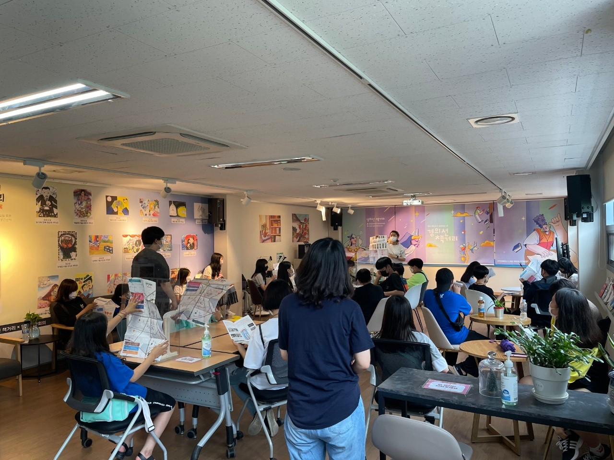

- [경의선 책거리] 2021 겨울빛축제 : 달빛책산책 V-log
 [경의선 책거리] 소복 소복 눈 내리는 책거리 브이로그
[경의선 책거리] 소복 소복 눈 내리는 책거리 브이로그- [경의선 책거리] 12월의 미디어북월_루미와 함께 겨울나기
- [경의선 책거리] 10월 책약국 비하인드 글자로 말해요 김은지 시인편
🏃♀️
홍대, 어디까지 가봤니? 이달의 북로드
🏃♂️망원동 골목골목 사이, 문학의 자취를 따라 사랑하는 사람과 같이 걸어 보아요.
[망원역의 편안한 북카페] 당인리 책발전소
향기로운 커피 향과 종이 냄새가 이곳의 감성을 한스푼 더해준다.
여러분들의 시계를 이곳에서 잠시 멈추어보세요.
서울특별시 마포구 월드컵로14길 10-8
https://www.instagram.com/danginbookplant/프로그램 안내

[경의선 책거리 겨울빛축제] 달빛책 산책, 함께 걸어요
21.12.17(금) ~ 22.02.15(화) / 17:30 ~ 23:00
이번 겨울빛축제는 우주와 자연을 모티브로 '달에서 책을 읽고 새로운 세상을 맞이하는 우리의 꿈'이라는 주제로 위드코로나 시대에서 다가올 새해의 희망과 소망을 달과 토끼에게 전해보세요~
[경의선 책거리 5주년 기념 저자데이 책축제] 모두가 만들어가는 사유(思惟) 책축제에 여러분을 초대합니다.
21.10.19(화) ~ 21.10.24(일) / 11:00 ~ 20:00
빠른 참여 링크
1. 함께사유
- 링크(구글폼) : https://forms.gle/uDoL2gQcCkh1MRHf7
2. 저자사유(정혜윤 PD 강연)
- 링크(구글폼) : https://forms.gle/ZSfcaErJ7CSAYnUS8
3. 낭송사유
- 링크(구글폼) : https://forms.gle/ZSfcaErJ7CSAYnUS8
(ZOOM라이브 링크는 행사 1시간 전 보내드립니다.)
4. 특별기획전시 '박완서의 집'
- 링크(네이버 예약) : https://han.gl/V52eZ
오프라인 : 경의선 책거리 (홍대입구역 6번 출구 앞)
온라인 : Book On-Air(유튜브), 온라인 ZOOM 라이브
홈페이지 : gbookst.or.kr
[특별기획전시I] 기획전시 박완서 작가 특별기획전 <박완서의 집>
22.10.19(화) ~ 21.11.7(일) / 11:00 ~ 18:00
기획전시 박완서 작가 특별기획전 <박완서의 집>
[특별야외전시] 크라운해태와 함께하는 책거리 예술 조각전
상시 전시
[특별야외전시] 크라운해태와 함께하는 책거리 예술 조각전
FAQ
- 경의선 책거리는 어떻게 찾아가나요?
- 경의선 책거리 주차는 어디에 하나요?
- 경의선 책거리는 무엇을 하는 곳인가요?
- 경의선 책거리 문화프로그램은 어떻게 신청하나요?
- 경의선 책거리 대관 신청은 어떻게 하나요?
경의선 책거리는 홍대입구역 6번 출구 앞에 위치해 있습니다.
2호선과 살짝 거리가 있는 경의선 철도 쪽 6번 출구입니다.
경의선 책거리에는 주차 공간이 마련되어있지 않으니, 가급적 대중교통을 부탁드립니다.
주차가 불가피 할 경우 동교3공영주차장, 동교2 노상 공영주차장, 동교1 노상 공영주차장을 이용해 주시길 바랍니다.


9개의 산책 부스로 이루어진 복합 문화 공간으로서 테마에 맞게 부스별로 다양한 도서, 예술품들을 전시 판매하고 있습니다. 7개의 부스에서는 독립출판사, 서점, 기관에서 판매와 함께 월 2회 문화 프로그램과 체험 프로그램을 운영합니다.
이 외에 문화산책에서는 전시가, 공간산책에서는 북토크, 북콘서트가 진행되오니 일정 확인해주시고 방문해주세요. ^^
1. 경의선 책거리 운영 프로그램은 네이버 "경의선 책거리" 검색 후 예약을 받고 있습니다.
2. 각 부스에서 이루어지는 프로그램일 경우, 홈페이지 "이달의 프로그램"에서 신청하거나 각 산책부스의 모집 경로를
안내받아 진행해주셔야 합니다.
대관 신청 양식은 경의선 책거리 공식 카페인 cafe.naver.com/gbookstreet에서 다운 받아 작성하신 후 gbookstreet@naver.com 으로 보내주시면 담당자분이 검토 후 연락을 드립니다.
마포중앙도서관에서 추천하는 이달의 책!
1. [홀로서기 연습] 레몬심리 저, 정민미디어
500만이 선택한 레몬심리 솔루션! 진짜 나를 깨닫고 행복하게 홀로 서는 법!
이 책은 500만이 선택한 레몬심리 솔루션의 결정체로, 총 6장에 걸쳐 나 자신의 문제 원인을 단계별로 분석하고
‘내면의 나’와 대화하도록 유도한다.
2. [역사를 품은 수학, 수학을 품은 역사] 김민형 저, 21세기북스
10만 독자가 선택한 『수학이 필요한 순간』 김민형 교수의 최신작
『역사를 품은 수학, 수학을 품은 역사』는 네이버 온라인 강연 ‘지식라이브ON’에서 진행된 8편의 수학 강의를 한 권으로 엮은 책이다.
이 책에서는 고대 수학이 우리 삶에 미친 영향, 근의 공식이 발명되기까지 대륙을 넘나든 인간의 수학적 사고의 역사와
현대과학의 전환점에서 시인이 수학자의 전기를 쓰게 된 사연까지 문학, 자연과학 등 많은 학문과 맞물린 수학 이야기를 흥미롭게 풀어낸다.
3. [눈아이] 안녕달 글· 그림, 창비
한겨울을 포근하게 감싸는 마법 같은 상상 『수박 수영장』 『당근 유치원』 작가 안녕달의 겨울 이야기.
이야기는 한 아이가 눈 덮인 들판에 홀로 있던 눈덩이를 찾아오면서 시작된다.
아이가 눈덩이에게 팔다리와 눈, 입, 귀를 만들어 주고 다정한 인사를 건네자 눈덩이는 ‘눈아이’가 된다.
눈덩이를 들판에 홀로 외롭게 두지 않으려는 마음에서 비롯된 상상은 아이와 눈아이가 함께하는 순간들을 비추며
우정이 아이의 마음을 키우는 모습을 눈부시게 그린다.